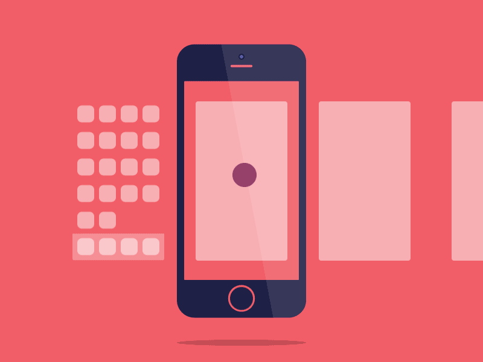

RECOMENDACIONES
- Evite juegos y redes sociales
- Reserve algunos minutos para intercambiar mensajes y revisar su correo electrónico
- Desactive notificaciones que distraigan su atención
- Establezca una rutina de uso saludable (aunque sea difícil)
- Pasar menos tiempo con el
- Reserve algunos minutos para intercambiar mensajes y revisar su correo electrónico
- Desacanzar por lo menos 30 minutos
- Activar modo avion
